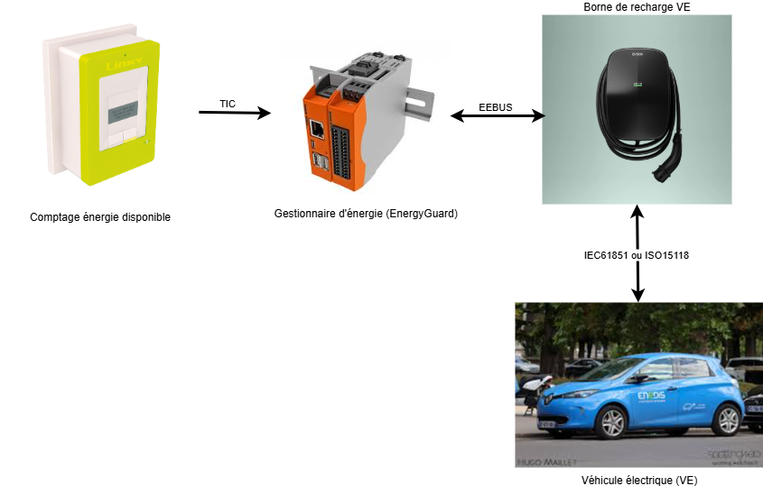

Modèle de données
Introduction
Le projet tic4eebus est organisé autour de 4 acteurs :
- Le dispositif de comptage d’énergie disponible (compteur Linky)
- Le gestionnaire d’énergie chargé de limiter le Véhicule électrique (EnergyGuard dans la norme EEBUS)
- La borne de recharge de véhicule électrique
- Le véhicule électrique

Chacun des acteurs ci-dessus possède un modèle de données spécifique.
Modèle de données du dispositif de comptage (Meter)
La compteur Linky nous fournit les données suivantes :
| Nom | Description | Mode | Format | Valeur |
|---|---|---|---|---|
| SerialNumber | Numéro de série du compteur Linky | Lecture | Chaine de 12 caractères | "041976216986" |
| DateTime | Horodate du compteur Linky | Lecture | Date au format AA/MM/JJ hh:mm:ss | "25/10/09 09:26:12" |
| BreakerOpened | État de l'organe de coupure du compteur Linky | Lecture | Booléen | - true si l'organe de coupure est ouvert - false sinon |
| PhaseCount | Nombre de phase du compteur Linky | Lecture | Entier | - 1 si le compteur est monophasé - 3 sisi le compteur est triphasé |
| OverLoadPowerLimit | Puissance apparente de coupure du compteur Linky en VA sur l'ensemble des phases | Lecture | Entier | De 0 à 99000 |
| OverLoadCurrentLimit1 | Courant de coupure du compteur Linky en A sur la phase 1 | Lecture | Décimal | De 0.0 à 99000.0 |
| OverLoadCurrentLimit2 | Courant de coupure du compteur Linky en A sur la phase 2 | Lecture | Décimal | De 0.0 à 99000.0 |
| OverLoadCurrentLimit3 | Courant de coupure du compteur Linky en A sur la phase 3 | Lecture | Décimal | De 0.0 à 99000.0 |
| RmsVoltage1 | Tension efficace aux bornes du compteur Linky en V sur la phase 1 | Lecture | Entier | De 0 à 99999 |
| RmsVoltage2 | Tension efficace aux bornes du compteur Linky en V sur la phase 2 | Lecture | Entier | De 0 à 99999 |
| RmsVoltage3 | Tension efficace aux bornes du compteur Linky en V sur la phase 3 | Lecture | Entier | De 0 à 99999 |
| RmsCurrent1 | Courant efficace soutiré aux bornes du compteur Linky en A sur la phase 1 | Lecture | Décimal | De 0.0 à 999.0 |
| RmsCurrent2 | Courant efficace soutiré aux bornes du compteur Linky en A sur la phase 2 | Lecture | Décimal | De 0.0 à 999.0 |
| RmsCurrent3 | Courant efficace soutiré aux bornes du compteur Linky en A sur la phase 3 | Lecture | Décimal | De 0.0 à 999.0 |
| ApparentImportPower | Puissance apparente instantanée soutirée aux bornes du compteur Linky en VA sur l'ensemble des phases | Lecture | Entier | De 0 à 99999 |
| ApparentImportPower1 | Puissance apparente instantanée soutirée aux bornes du compteur Linky en VA sur la phase 1 | Lecture | Entier | De 0 à 99999 |
| ApparentImportPower2 | Puissance apparente instantanée soutirée aux bornes du compteur Linky en VA sur la phase 2 | Lecture | Entier | De 0 à 99999 |
| ApparentImportPower3 | Puissance apparente instantanée soutirée aux bornes du compteur Linky en VA sur la phase 3 | Lecture | Entier | De 0 à 99999 |
| AvailableCurrent1 | Courant efficace soutiré disponible aux bornes du compteur Linky en A sur la phase 1 | Lecture | Décimal | De 0.0 à 99000.0 |
| AvailableCurrent2 | Courant efficace soutiré disponible aux bornes du compteur Linky en A sur la phase 2 | Lecture | Décimal | De 0.0 à 99000.0 |
| AvailableCurrent3 | Courant efficace soutiré disponible aux bornes du compteur Linky en A sur la phase 3 | Lecture | Décimal | De 0.0 à 99000.0 |
Modèle de données du gestionnaire d'énergie
Données générales
Les données générales du gestionnaire d'énergie sont les suivantes :
| Nom | Description | Mode | Format | Valeur |
|---|---|---|---|---|
| IsConnected | État de la connexion EEBUS | Lecture | Booléen | - true si le gestionnaire est connecté avec la borne - false sinon |
| HasMeterData | État de la connexion avec le compteur Linky | Lecture | Booléen | - true si les données du compteur Linky sont lues - false sinon |
| IsOpevSupported | Indicateur de conformité avec le cas d'utilisation OPEV de la norme Lecture EEBUS | Lecture | Booléen | - true si le cas d'utilisation OPEV est supporté - false sinon |
Données de limitation de la charge du véhicule électrique (OverloadProtection)
Les données de limitation de la charge du gestionnaire d'énergie sont les suivantes :
| Nom | Description | Mode | Format | Valeur |
|---|---|---|---|---|
| Active | État d'activation de la limitation de charge du VE | Lecture/Écriture | Booléen | - true si une limitation est appliqué - false sinon |
| Value | Valeur de la limitation de charge du VE en A | Lecture/Écriture | Décimal | De 0.0 à 32.0 |
| Start | Horodate de début de limitation de charge du VE | Lecture/Écriture | Date au format UTC | "2025-10-09T10:35:00+02:00" |
| ResultCode | Code de résultat de la dernière limitation de charge de VE | Lecture/Écriture | Énumération | Valeurs de ErrorNumberType |
| ResultDescription | Description du résultat de la dernière limitation de charge de VE | Lecture/Écriture | Chaine de caractères | Description détaillée de l'erreur de limitation de charge |
| LockActive | État d'activation du maintien de la limitation de charge de VE | Lecture/Écriture | Booléen | - true si le maintien est actif - false sinon |
| LockStart | Horodate de début de maintien de la limitation de charge du VE | Lecture/Écriture | Date au format UTC | "2025-10-09T10:35:00+02:00" |
Données de diagnostique (Diagnosis)
Les données de diagnostique du gestionnaire d'énergie sont les suivantes :
| Nom | Description | Mode | Format | Valeur |
|---|---|---|---|---|
| OperatingState | État fonctionnel du gestionnaire d'énergie | Lecture/Écriture | Énumération | Valeurs de DeviceDiagnosisOperatingStateEnumType |
| LastErrorCode | Dernière erreur du gestionnaire d'énergie | Lecture/Écriture | Chaine de caractères | Description détaillée de l'erreur du gestionnaire |
Modèle de données de la borne de recharge (EVSE)
La borne de recharge de véhicule électrique nous fournit les données suivantes :
| Nom | Description | Mode | Format | Valeur |
|---|---|---|---|---|
| IsConnected | État de la connexion avec la borne | Lecture | Booléen | - true si la borne est connectée - false sinon |
| OperatingState | État fonctionnel de la borne | Lecture | Énumération | Valeurs de DeviceDiagnosisOperatingStateEnumType |
| ManufacturerData | Données constructeur identifiant la borne | Lecture | Structure | Valeurs de DeviceClassificationManufacturerDataType |
Modèle de données du Véhicule Électrique (VE)
Le véhicule électrique nous fournit les données suivantes :
| Nom | Description | Mode | Format | Valeur |
|---|---|---|---|---|
| IsConnected | État de la connexion entre le véhicule et la borne | Lecture | Booléen | - true si le véhicule est connectée - false sinon |
| ChargeState | État de la charge du véhicule | Lecture | Énumération | - Unknown si l'état fonctionnel de la borne est invalide - unplugged si l'état fonctionnel de la borne ne peut être lu - active si la borne fonctionne correctement - paused si la borne est en mode veille - error si la borne est en erreur - finished si la borne a terminé ses opérations |
| CommunicationStandard | Protocole de communication entre le véhicule et la borne de recharge | Lecture | Énumération | - iec61851 pour le protocole IEC 61850 - iso15118-2ed1 pour le protocole 15118-2 première édition - so15118-2ed2 pour le protocole 15118-2 seconde édition |
| AsymmetricChargingSupport | Indique si la recharge avec des courants différents par phase est possible | Lecture | Booléen | - true si la charge asymétrique triphasée est supportée - false sinon |
| Identifications | Identifiants du véhicule | Lecture | Tableau | Tableau de structure contenant : - ValueType pour le type (IdentificationTypeEnumType)) - Value pour l’identifiant en chaine de caractères |
| ManufacturerData | Données constructeur du véhicule | Lecture | Structure | Valeurs de DeviceClassificationManufacturerDataType |
| ChargingPowerLimits | Limitations de puissance du véhicule | Lecture | Structure | Structure contenant les valeurs décimales : - Min pour la puissance minimale de charge - Max pour la puissance maximale de charge - Standby pour la puissance en mode veille |
| IsInSleepMode | État du mode veille du véhicule | Lecture | Booléen | - true si la borne est en mode veille - false sinon |
| PhasesConnected | Nombre de phases du véhicule connectées | Lecture | Entier | 1, 2 ou 3 phases |
| CurrentPerPhase | Mesure du courant de charge du véhicule sur chaque phase | Lecture | Tableau | Liste de valeurs décimales pour chaque phase en Ampère |
| PowerPerPhase | Mesure de puissance de charge du véhicule sur chaque phase | Lecture | Tableau | Liste de valeurs décimales pour chaque phase en Watt |
| EnergyCharged | Mesure de l’énergie chargée par le véhicule | Lecture | Décimal | Valeur en Wattheure |
| CurrentLimits | Limitations de courant du véhicule sur chaque phase | Lecture | Structure | Structure contenant les valeurs décimales en Ampère : - Min pour le courant minimal de chaque phase - Max pour le courant maximal de chaque phase - Default pour le courant par défaut de chaque phase |
| LoadControlLimits | Limitations du courant de charge du véhicule sur chaque phase | Lecture/Écriture | Tableau | Tableau de structure contenant les valeurs : - Phase pour indiquer la phase (ElectricalConnectionPhaseNameEnumType) - IsChangeable pour indiquer si la limitation est modifiable (true / false) - IsActive pour indiquer si la limitation est active (true / false) - Value pour la limitation de courant décimale en Ampère |
Modèle de données EEBUS
Documents de référence
Les documents de référence utilisés pour le modèle de données sont :
ErrorNumberType
L'énumération ErrorNumberType (voir Table 19) indique le type d'erreur.
Elle peut prendre les valeurs suivantes :
| Valeur de l'énumération | Description de l'énumération |
|---|---|
| 0 | Aucune erreur |
| 1 | Erreur générale |
| 2 | Délai imparti dépassé |
| 3 | Surcharge |
| 4 | Destination inconnue |
| 5 | Destination injoignable |
| 6 | Commande non supportée |
| 7 | Commande rejetée |
| 8 | Combinaison d'échange de fonctions restreintes non supportée |
| 9 | Liaison nécessaire pour cette commande |
DeviceDiagnosisOperatingStateEnumType
L'énumération DeviceDiagnosisOperatingStateEnumType (voir Table 45) décrit l'état fonctionnel de l'équipement.
Elle peut prendre les valeurs suivantes :
| Valeur de l'énumération | Description de l'énumération |
|---|---|
| normalOperation | L'équipement fonctionne correctement sans erreur ni limitations |
| standby | L'équipement est en veille et est en attente d’interactions utilisateur |
| failure | L'équipement est en erreur et ne peut fonctionner normalement |
| serviceNeeded | L'équipement a besoin d'un certain type de service et ne peut fonctionner normalement |
| overrideDetected | L'équipement a détecté un écrasement. L'équipement est soit en fonctionnement normal soit en mode sécurité. |
| inAlarm | Une alarme (ou urgence) est apparue et l'équipement est en attente d'une action utilisateur |
| notReachable | L'équipement n'est pas joignable via ses communications non EEBUS-SPINE |
| finished | L'équipement a temporairement terminé ses opérations. Tant qu'il reste dans cet état il ne fonctionne pas normalement. |
| temporarilyNotReady | L'équipement n'est pas encore prêt à fonctionner normalement |
| off | L'équipement est éteint et a cessé de fonctionner |
DeviceClassificationManufacturerDataType
La structure de données DeviceClassificationManufacturerDataType (voir §5.3.7.2) identifie et décrit un équipement à l'aide des champs suivant :
| Nom du champ | Description du champ | Format du champ | Exemple |
|---|---|---|---|
| DeviceName | Nom de l'équipement | Chaine de caractères | "EVBox-Livo-EVB-500-021-302" |
| DeviceCode | Code de l'équipement | Chaine de caractères | |
| SerialNumber | Numéro de série | Chaine de caractères | "EVB-500-021-302" |
| SoftwareRevision | Version du logiciel | Chaine de caractères | |
| HardwareRevision | Version matériel | Chaine de caractères | |
| VendorName | Nom du revendeur | Chaine de caractères | |
| VendorCode | Code du revendeur | Chaine de caractères | |
| BrandName | Nom de la marque | Chaine de caractères | "EVBox" |
| PowerSource | Source d'alimentation | Chaine de caractères | |
| ManufacturerNodeIdentification | Identification du fabriquent du nœud EEBUS | Chaine de caractères | |
| ManufacturerLabel | Libellé du fabriquant | Chaine de caractères | |
| ManufacturerDescription | Description du fabriquant | Chaine de caractères |
IdentificationTypeEnumType
L'énumération IdentificationTypeEnumType (voir Table 231) qui décrit le type d'identifiant.
Elle peut prendre les valeurs suivantes :
| Valeur de l'énumération | Description de l'énumération |
|---|---|
| eui48 | Adresse MAC au format EUI-48 |
| eui64 | Adresse MAC au format EUI-64 |
| userRfidTag | Étiquette RFID utilisée pour l’identification |
ElectricalConnectionPhaseNameEnumType
L'énumération ElectricalConnectionPhaseNameEnumType (voir Table 209) qui indique la ou les phases mesurée.
Elle peut prendre les valeurs suivantes :
| Valeur de l'énumération | Description de l'énumération |
|---|---|
| a | Phase 1 |
| b | Phase 2 |
| c | Phase 3 |
| ab | Phase 1 |
| bc | Phase 2 |
| ac | Phase 1 |
| abc | Phase 1, 2 et 3 |
| neutral | Neutre |
| ground | Terre |
| none | Aucune phase |